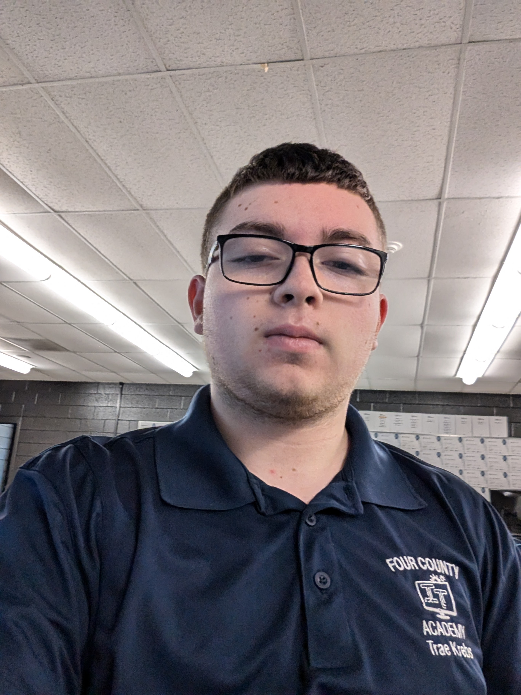

About Me: Trae Krebs
Ceritified internet funny man.

My Background
I was born on May 28th in Ohio and lived here for all of my life.
I have a brother and a sister that are both older than me.
I live with my mom and my brother. I also have two dogs, one of them is a mix between Pomeranian, Chihuahua, and Huskey.
The other dog is a full-blood Black Lab.
I have been interested in web and game design since an early age.
I've been diagnosed with Depression and Anxiety.
I've been in and out of therapy due to my family and friends taking advantage of my kindness.
Facts About Me and My Family
It takes a lot Capsaicin to make me feel like my mouth is on fire.
I've been to ten out of the fifty states in the U.S.
While at my home school, I used to work for their Tech Team.
I am the last namesake for my father's side of the family.
My dad served in the Untied States Navy.
He served on an Arleigh Burke guided-missile destroyer.
My sister is diagnosed with bipolar 1.
Me, my brother, and my mom are religious.
Hobies and Interests
One of my favorite thing to do is play video games.
I've persued this hobby to the point that I'm the captain of Mario Kart 8 Deluxe at my homeschool.
I have also taken up Super Smash Bros. Ultimate on Wednesdays.
Another hobby I enjoy is cooking.
I also find joy in eating really spicy foods.
Due to my aforementioned spice tolerance I've terrrified workers at a Peper Palace before.
Some other thing I'm intersted is include:
- Pokemon Cards
- History
- Geogrophy
- Math
- Science
- Global Politics
| Course Name | Course Number | Credits |
|---|---|---|
| Database Management | CIT109 | 4 |
| C# Programming | CIT161 | 4 |
| Java Programming | CIT165 | 4 |
| Python Programming | EET107 | 3 |
| Internnet Scripting | CIT108 | 4 |
| Computer Operations | CIT191 | 3 |
| Optional Courses | ||
| Microsoft Apps | CIT114 | 3 |
| CCP Math Elective | 3 | |
| Composition 1 | ENG111 | 3 |